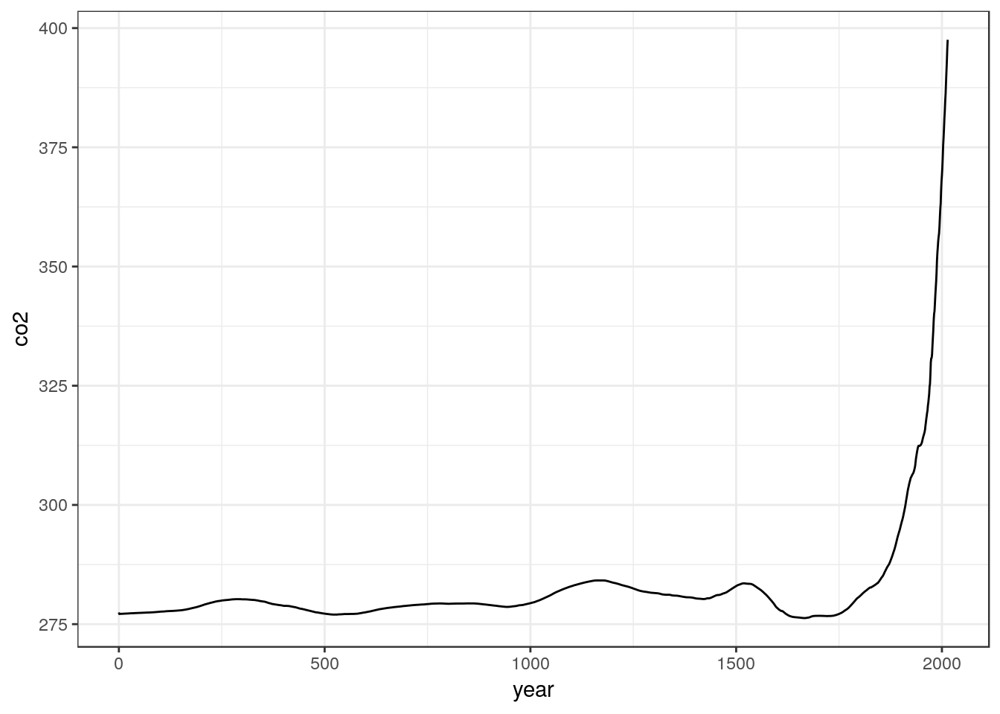
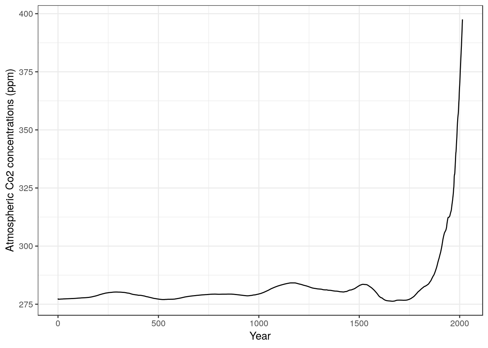
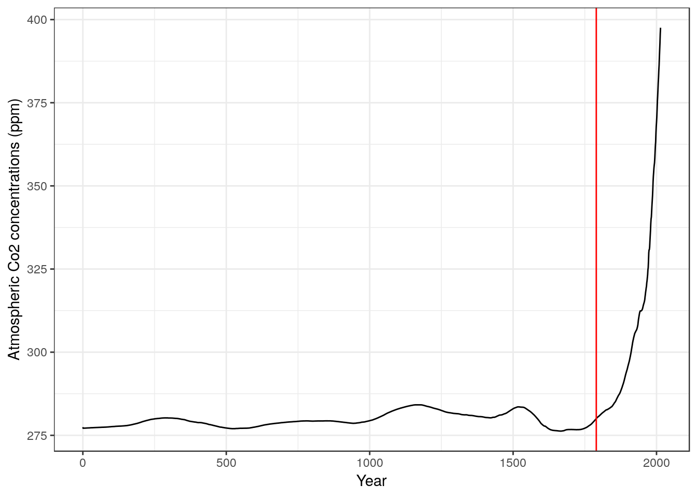
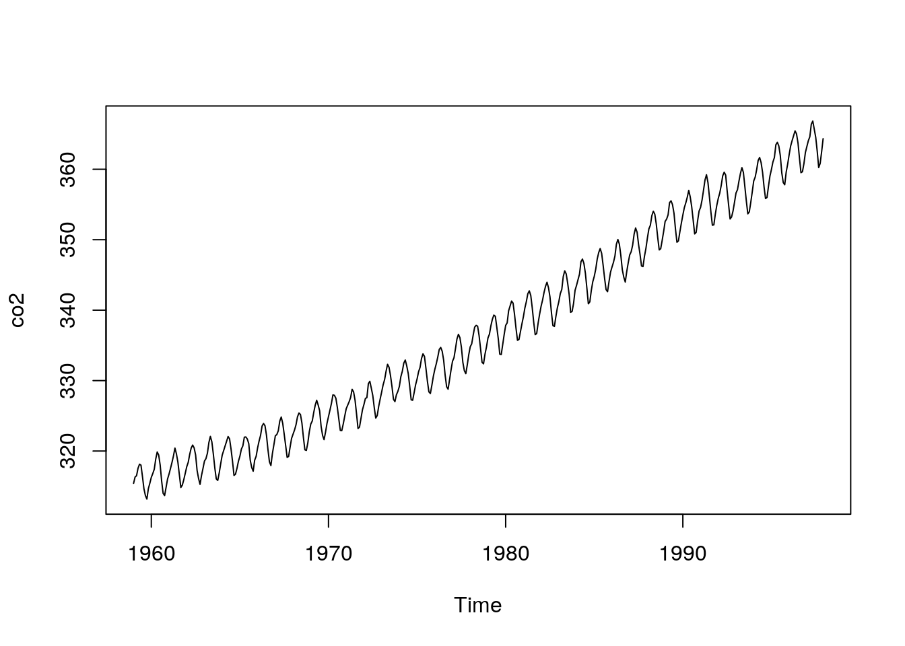
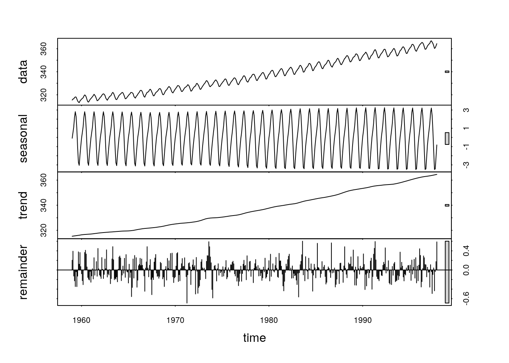

Chapter 6 Basic statistical concepts. Refresher using a simple example
It may have been a while since you last learned about statistics. Statistical software now makes running the calculations themselves very easy. Although using R may seem rather challenging at first, it is really much faster to use R than to carry out statistics “by hand” or using non dedicated software such as Excel However the problem with using R for statistics is that many students concentrate attention on learning to use the software rather then remembering the concepts. In this class we will refresh the most basic ideas in statistics without using any software. We will then see how to use R to make life easier.
6.0.1 Getting some data
Let’s look at the reaction times on a simple test for the students in the class. Click on the link below. Run the test. After a “burn in” period to get used to the idea, record your own time in ten trials.
6.0.2 Action: Get some personal data
- Click on the link, https://www.humanbenchmark.com/tests/reactiontime/
- Try your reactions three times as a “burn in”
- Record ten trials and write down the times on a piece of paper.
- Calculate your mean reaction time using a calculator, a piece of paper or any other method. Hint: The mean is the sum of all the times divided by the number of trials
- Write your own results on the white bowrd.
Ok we now have some data from the class. We will now go a step further.
6.0.3 Action: Summarise the class data
- Find the maximum.
- FInd the minimum
- FInd the median reaction time. To do this, place the results in descending order. Find the number in the middle of the table. If there is an even number of results then average the two numbers at an equal distance from the top and the bottom.
- Find the mean reaction time for the class.
These are basic descriptive statistics.
6.1 Inferential statistics
This part of the exercise is more subtle. We will spend a lot of time during the classes discussing the nature of statistical inference and the importance of testing assumptions. For the moment, let’s just do the maths.
6.1.1 Action: Calculate the standard deviation “by hand”
- Subtract the mean reaction time from each observation to produce a table of differences from the mean. Some will be positive, others negative.
- Try adding all these differences together. What do you get? Why?
- Calculate the square of each difference.
- Add together all the squared differences to find the sum of the squares.
- Divide the sum of the squares by n-1 (where n is the number of observations)
- Take the square root of this number.
Just out of interest You don’t have to follow this yet, the following R code does this operation “by hand”
data<- c(440,340,350,456,470) ## Five observations of reaction time
x<-data-mean(data) # Subtract the mean from the data
x<-x^2 # Square the results
x<-sum(x)/4 # Divide by n.1
sqrt(x) # Take the square root## [1] 61.45893And again, just out of interest, statistical software does all this (and a lot more) with a simple function.
sd(data)## [1] 61.458936.2 Calcuate the standard error of the mean.
The standard errror of the mean is the standard deviation divided by the square root of the sample size. The 95% confidence interval for the mean is approximately two times the standard error.
6.2.1 Action: Calculate the standard error and 95% confidence interval for the mean
- Divide the standard deviation by the square root of the sample size.
- Multiply this by two.
- Provide a range by adding this number to the mean and subtracting it from the mean.
6.3 Test whether the statistics “work”
6.3.1 Action: Rinse and repeat.
- Conduct the experiment again. This time just calculate the mean.
- Does the mean fall inside the confidence intervals you found?
- Discuss the results.
6.3.2 Conclusion
There is a lot to discuss here. We will look at the nature of inferential statistics in more detail as we go on. Practice calculating standard deviations and standard errors “by hand” in order to get a feel for the process. Once you understand the calculations you can leave the rest to the computer. However you will have to understand the assumptions involved in calculating a standard error in order to apply statistics correctly. We will go thought this carefully later.
6.4 Planning an analysis
The steps for any successful research project which has a quantitative component are;
- Decide on one or more interesting and tractable scientific questions.
- Design an experiment or field survey that will produce data that addresses the question(s).
- Decide how the data you will collect relates to your scientific question(s). This step will involve re-framing some or all of the questions as statistical hypotheses and/or statistical models.
- Decide on the planned analysis that you wish to conduct on your data. These should effectively summarise key features, describe patterns, test hypotheses, establish associations between variables and/or estimate effect sizes and parameter values.
- Test your analysis carefully (preferably using dummy data and/or power analysis based on a small sample) to ensure that you know how to run them. Critically evaluate whether your field work is likely to provide suitable data (sufficiently replicated) in a suitable format. Make contingency plans and decide on alternative analysis in case data do not meet the assumptions needed for the planned analysis.
- Collect the full data set.
- Investigate the properties of the data you have collected in the light of the assumptions used in your analysis.
- Run the planned analysis (or the contingency analysis) and obtain the appropriate data summaries, test results, model output, tables and figures.
- Interpret and discuss the results.
Although this course concentrates on the analytical component of this research sequence, the initial steps rely on knowledge of the specific system you are studying. Quantitative methods allows you to apply powerful computational tools to your own research, but these tools will only be effective if the right questions are formulated from the start. It is often stated that the best questions are the simplest because they lead easily into the formulation of clear hypotheses or models. This is good advice. However ecological research inevitably deals with complex systems involving multiple variables. The most appropriate analysis for MSc research projects can involve computational methods that go beyond the statistical tests found in introductory texts. Without a working knowledge of the available techniques it can be difficult to extract all the information from your data and link the results to the motivating questions.
6.4.1 Understanding your data before you start colllecting them
In a statistical text book aimed at undergraduates, Dytham (20014) makes the following suggestion.
“Collect dummy data (i.e. make up approximate values based on what you expect to obtain). The collection of ‘dummy data’ may seem strange but it will convert the proposed experimental design or sampling routine into something more tangible. The process can often expose flaws or weaknesses in the data- collection routine that will save a huge amount of time and effort.”
“I implore you to use this. I have seen countless students who have spent a long time and a lot of effort collecting data only to find that the experimental or sampling design was not quite right. The test they are forced to use is much less powerful than one they could have used with only a slight change in the experimental design. This sort experience tends to turn people away from statistics and become ‘scared’ of them. This is a great shame as statistics are a hugely useful and vital tool in science.”
I completely agree with this author on this point. I have had exactly the same experience. Year after year I have been asked by students to help them analyse their data only to find that they did not plan the data collection with any particular analysis in mind. This never works. Not only is the analysis not likely to show much, but the data will rarely be structured in a manner that allows an analysis to be run at all! This leads to a pre-write up panic and post write-up anguish about what might have been.
So, data collection and data analysis should be planned together. There is no realistic alternative. If you understand how an analysis works you will also understand what sort of data are needed to run it. As you are still learning the basics of quantitative ecology there is clearly something of a chicken and egg situation here. How can you know which analysis you are going to need if you still have not learned enough to choose from? This is a valid point. Nevertheless there are some simple concepts that you can use that avoid many problems later on.
In addition to forming a “dummy” data set it is often possible to run some form of power analysis on a small subset of data collected as part of a pilot study. This can indicate how large a sample you may need in order to show statistically significant results. This step is often ignored, but it inmensely strengthens any research proposal and can also be used as a means of formally explaining why the data did not provide firm evidence in support of a scientific question even after the main study has been completed.
6.5 Quantitative analysis
Anyone carrying out research is keenly aware of the importance of quantitative analysis. However many students, and even some researchers, approach quantitative analysis with some trepidation. It is a vast and potentially complex field. The most common worry revolves around statistics. Frequently asked questions include “Which test should I choose for my data?” “How do I know that I have chosen the right test?” “What does the test tell me?” “How do I interpret the results?”
There are all important questions to ask. However some of the worries about statistics may be the result of over emphaisising the word “test”. The most important question is in fact “how can I use all the data I have available to address a meaningful research question?” This may, or it may not, involve applying statistical tests. It almost certainly will involve visualising your data, either in the form of maps, figures or both. It will always involve getting to know the nature of your data in depth and communicating your knowledge to other people in a direct and meaningful manner. Sometimes statistical tests and models are absolutely essential. In other cases they may not be useful at all. Sometimes you may be able to select an appropriate analysis quite easily from a set of standard, commonly applied methods. In other cases you may need to seek expert advice from an experienced researcher ,or statistician, in order to extract the most from your data, avoid pitfalls and fully justify your conclusions. Sometimes a simple shaded map, or a few well chosen figures, may answer the research question directly. Sometimes that approach would just be dismissed as being “merely descriptive” in which case you would be expected to have applied much more sophisticated inferential statistics. It all depends on the nature of the research and the nature of the data at hand.
In a single semester it is impossible to teach all the methods that may be needed in order to analyse a data set of the sort collected for a dissertation. Observational data sets are typically very esoteric in nature, and so tend to be challenging to analyse and may require quite advanced techniques. Careful thought and some creativity is usually needed to conduct any meaningful analysis. The more statistical methods that you know about, the more likely it will be that you will find an appropriate analytical tool to address your research question. Often you will need some help to find an appropriate method, but if you are aware of the concepts behind inferential statistics you can frame better questions.
6.6 What does quantitative data consist of?
This question appears at first sight rather trivial. Surely the key is in the name? Quantitative data consists of quantities, i.e. numbers, so we need to do some sort of maths to analyse them. However this simple definition hides many subtleties and potential pitfalls, as we will see It is often far from clear what sort of variables we are dealing with and how they are defined.
Variables are the column headers in a correctly formatted data frame. There are fundamentally two sorts of entries that can be typed into the rows below the column headers. Text and numbers. Let’s keep it all very simple for now.
If a column contains rows of text then the variable is categorical, so it will be considered to be a “factor”. If the column contains rows of numbers, then the variable is a numerical variable of some form. There are many variations on this basic theme to consider, but once you have gained some clarity about this basic concept, many elements of data analysis will fall into place.
So:
- Text will (nearly) always be interpreted as a factor
- Numbers of any sort will (nearly) always be interpreted as a numerical variable
Factors have as many levels as there are unique entries in the data column. So if the header were “gender” we would have a categorical variable (factor) with two levels. If it is site we will have as many levels as sites.
We could go onto to a mroe detailed break down of the differences between various forms of numerical variables, but we’ll leave it at that until later.
6.7 Data visualisation vs statistical analysis
Traditional statistical text books place probably place too much emphasis on the statistics, and too little emphasis on producing good clear data visualisations. If a picture is worth a thousand words it is also worth at least a thousand confusing and incomprehensible statistics. Good figures are often the most informative and useful elements in any modern data analysis.
This is good news, as most people find figures much easier to understand than raw numbers. Once you become aware that a figure is not only easier to understand than a statistical test but that it is also often the best way to answer the key scientific question, some of the worry surrounding the issue of statistics can be removed.
6.8 A simple example
Let’s frame a very straightforward scientific question and try to answer it with simple data.
“How have global atmospheric CO2 concentrations changed since the start of the industrial revolution?”
Data available from here.
6.9 Graphical data analysis
Let’s read the data into R. Its on the server in a folder beneath your working directory. This will read it.
d<-read.csv("/home/msc_scripts/data/co2.csv")6.10 Forming a plot in R
Throughout this course we will use the modern graphics facility in R provided by the ggplot2 library as much as possible. This provides a unified approach to forming figures, that is slightly more difficult to learn to use than base graphics, but much more powerful.
These lines load the library and set up a theme for the plots. There are various themes that change the overall look of the plots. The default theme has a grey background, and it is often better to have a cleaner looking black and white theme.
library(ggplot2)
theme_set(theme_bw()) ## Set the theme to black and whiteNow, to set up a plot we first define the aesthetics. The aesthetics refer to the way the variables are mapped onto the plotting scheme. We often have an x and y axis. This line sets these up.
g0<-ggplot(d,aes(x=year,y=co2)) ## Set up the base plotNothing seems to have happened. However the object is being built up ready for plotting. This can then be used in various ways.
Now we can use a “geometry” to form a plot wth a line. Geom_line does this.
g0<-g0+geom_line()When we type the name of the object it will now be plotted.
g0
However we have just the variable names along the axes. It might be better to be more explicit about what is being plotted.
g0<-g0+ylab("Atmospheric Co2 concentrations (ppm)")
g0<-g0+xlab("Year")
g0
There are a wide range of different geometries that can be used to add to the plot. I will provide example script lines for many of these that can be reused to make other plots. Say we need a reference vertical line in red to mark the start of the industrial revolution. We can add that using another line.
g0<- g0 + geom_vline(xintercept =1790,colour="red")
g0
This is not a very sophisticated figure, and a very similar figure could have been produced using Excel or similar software. However the nice thing about R is that the code lines set everything needed to make the graph and they are reusable. If the initial setup line used a different set of data the figure would all be redrawn in the same way.
The point is that the figure alone does tell most of the story in this case. It is quite apparent that atmospheric CO2 concentrations have increased over time. The red line added to the figure represents the start of the industrial revolution and we can see a consistent increase in concentrations dates from around this time. We do not need to run any additional statistical tests in order to address the question using these particular data. All that is required is one clear figure, which conveys the message.
This is not to imply that atmospheric scientists do not use inferential statistics, nor that a complete, formal analysis of the evidence for increasing levels of C02 in the atmosphere would not be based on some form of statistical modelling. However the raw numbers included in this particular data set are aggregated measures of global CO2 concentrations. They are not appropriate input to any form of inferential statistical test.
We use formal statistical inference when we do need to formally quantify uncertainty regarding the evidence we are using to address a scientific question. In this particular case there are many areas of genuine uncertainty, but we cannot address these through analysing the raw numbers as provided in this simple data set alone. Uncertainty arises due to the use of proxy measurements for historical CO2 levels rather than direct instrumented measurement. This is totally invisible in the data set. The data as given provides no measure of potential variability in CO2 levels from place to place. The data form a simple time series. Although the frequently used statistical techniques that you will learn more about on this course, such as linear regression, can sometimes be applied to time series, time series data points are not independent of each other. If CO2 concentrations are increasing year on year then the levels one year will depend on the level the previous year. So, the series of points lacks both replication and independence. Replication and independence are basic requirements for many statistical methods, although there are tools available to deal with some lack of independence. Data such as these are not suitable as input to standard statistical tests nor to conventional statistical models.
It is worth pointing this out right from the outset. Don’t jump to the use of inferential statistics until you need to use them. Similar situations often arise when data is collected for a dissertation but they may not be spotted as easily. “Which statistical test do I need to use to tell if there is a correlation between industrialisation and CO2 concentrations?” is totally the wrong question to ask of these data as they stand. Furthermore, even if it were possible to use a statistical test, setting up a null hypothesis of no difference between pre and post industrialisation atmospheric CO2 concentrations would make no sense, as there is a clearly understood and independently measurable process (CO2 emissions) that is responsible for the change.
6.11 A more complex time series
To illustrate the point further, look at this more detailed time series. It also consists of measurements of atmospheric CO2 concentrations. There were taken at the Mauna Loa observatory in Hawaii.
data(co2)
plot(co2)
You can easily see the general increasing trend. However there is also some consistent seasonal variability imposed on top of the trend. This arises because vegetation in the Northern Hemisphere takes up CO2 when it is growing in the spring and summer, and releases CO2 through decomposition of organic material during the winter. So we have a more complete data set and we may be able to answer more complex questions, such as how much interanual fluctuation exists in CO2 concentrations and whether these seasonal fluctuation have changed over time. These are not questions that involve purely random noise, so once again they are not suitable for simple, text book, introductory statistical tests.
6.12 Some high level code to break down the data
If this course were in fact to be aimed at teaching methods for analysing seasonal dependence in time series we would now go into great depth regarding a set of appropriate and specific analyses that could be applied to these sort of data. It is not, so we won’t do that at this point. However, just to illustrate the power that comes from being able to get the data into R, look at the ease with which we can run quite a sophisticated visual breakdown of the data. It simply needs a single line of R code.
plot(stl(co2,s.window=12))
We now have a complex figure that shows the raw data in the top panel, the fluctuating seasonal pattern in the second, the underlying trend in the third, and residual, random, “white noise” variability in the bottom panel. The only strictly stocahstic (random) element in this time series is shown in the lower panel.
The analysis can be run with a range of different parameters and the resulting breakdown of the data can be fed into more detailed further analyses. We won’t go into any of that at this stage. However, imagine how difficult it would be to produce a similar figure in Excel. Knowledge of R allows you to quickly apply sophisticated methods that have been developed by domain experts in a specific field very easily. All that is needed to get started is a reasonably good understanding of data formats and a basic understanding of some simple R syntax.
6.13 Inferential statistics
So, what is the difference between inferential statistical analysis and non inferential data analysis?
Fundamentally, all inferential statistics are about estimating some key parameters from data, rather than precisely measuring them. If we do have precise measures then we don’t need any inferential statistics at all. In the ideal case we could do away with all inferential statistics completely. There is nothing intrinsically scientific about using statsitical analysis. Many physicists tend to avoid stats completely. However most ecological studies do need inferential statistics of some description simply because we don’t have precise measures and the systems we are looking at tend to be very variable. So they are a necessary evil.